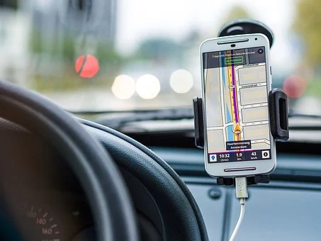

Voiture à 4 portes et 4 fenêtres, pour quatre ou cinq personnes avec toit fixe. C’est le modèle le plus commun.
Voiture à 4 portes et 4 fenêtres, pour quatre ou cinq personnes avec toit fixe. C’est le modèle le plus commun.

Voiture à 2 portes pour deux ou quatre personnes avec toit fixe. Quelquefois, les 2 places à l’arrière sont très petites. Ce ne sont pas des voitures familiales car les personnes à l’avant doivent sortir pour permettre aux passagers de monter ou descendre du véhicule. Voici certains modèles bien connus qui ne sont fabriqués qu’en version 2 portes : Ford Mustang, Dodge Challenger, Chevrolet Camaro.
Voiture à 2 portes pour deux ou quatre personnes avec toit fixe. Quelquefois, les 2 places à l’arrière sont très petites. Ce ne sont pas des voitures familiales car les personnes à l’avant doivent sortir pour permettre aux passagers de monter ou descendre du véhicule. Voici certains modèles bien connus qui ne sont fabriqués qu’en version 2 portes : Ford Mustang, Dodge Challenger, Chevrolet Camaro.

Communément appelé le « Station wagon ». C’est une voiture 4 places ou plus dont le toit se prolonge jusqu’à l’arrière. L’habitacle communique avec le coffre arrière et les sièges arrière sont rabattables, ce qui est très utile pour le transport de bagages et marchandises. La plupart du temps, ces modèles possèdent un hayon (hatchback). C’est à dire que la vitre arrière fait partie intégrante de la porte du coffre, ce qui facilite le rangement.
Communément appelé le « Station wagon ». C’est une voiture 4 places ou plus dont le toit se prolonge jusqu’à l’arrière. L’habitacle communique avec le coffre arrière et les sièges arrière sont rabattables, ce qui est très utile pour le transport de bagages et marchandises. La plupart du temps, ces modèles possèdent un hayon (hatchback). C’est à dire que la vitre arrière fait partie intégrante de la porte du coffre, ce qui facilite le rangement.
Décapotable pour 4 personnes ou plus. Le toit escamotable peut-être rigide ou souple. La Ford Mustang est un exemple de décapotable à toit souple. La Volkswagen EOS est du type à toit rigide. La plupart des modèles ont un dispositif électrique pour ouvrir ou fermer le toit. D’autres doivent être ouverts ou fermés manuellement.
Décapotable avec seulement 2 places. Ce type de voiture est souvent associé à la performance. On n’a qu’à penser à la Corvette, la Mazda MX-5, la Porche Boxster et la Audi TT Roadster.
Camion avec cabine de 2 places ou plus avec espace à l’arrière ouvert (boite) pour le transport de marchandises. Les Pickups peuvent avoir 2 ou 4 roues motrices.

Camion à 4 roues motrices de type Pickup ou SUV. Un système d’embrayage électronique ou manuel permet de passer de 2 à 4 roues motrices.
Camion à 4 roues motrices de type Pickup ou SUV. Un système d’embrayage électronique ou manuel permet de passer de 2 à 4 roues motrices.
Ce sont des véhicules pratiques pour la famille, les sportifs et les amateurs de plein air qui veulent de l’espace pour transporter leur équipement. Habituellement, ce type de véhicule possède quatre roues motrices, ce qui permet de rouler sur des terrains légèrement accidentés comme le sable et les routes enneigées. Quelques exemples : Subaru Outback. Volkswagen Touareg, Audi Q7… Certains modèles sont plus adaptés à la circulation en ville, mais d’autres peuvent carrément rouler hors route à cause de leur hauteur de dégagement et la solidité de leur cadre. On peut penser à la fameuse marque Jeep.
Ce sont des VUS construits sur une base de berline. Ils sont moins hauts que les VUS, plus légers et moins chers. Ce sont des voitures de ville. Même si certains modèles sont livrables en version quatre roues motrices, ce ne sont pas des véhicules tout terrain.

Véhicule familial de 4 à 7 places avec hayon. C’est comme une familiale, mais avec beaucoup plus d’espace et plus de hauteur. Elles ont été popularisées dans les années 80 par la Dodge Caravan. La plupart des fabricants ont maintenant leurs mini-fourgonnettes. On n’a qu’à penser aux Mazda MPV, Toyota Sienna, Honda Odyssey, Kia Sedona…
Véhicule familial de 4 à 7 places avec hayon. C’est comme une familiale, mais avec beaucoup plus d’espace et plus de hauteur. Elles ont été popularisées dans les années 80 par la Dodge Caravan. La plupart des fabricants ont maintenant leurs mini-fourgonnettes. On n’a qu’à penser aux Mazda MPV, Toyota Sienna, Honda Odyssey, Kia Sedona…